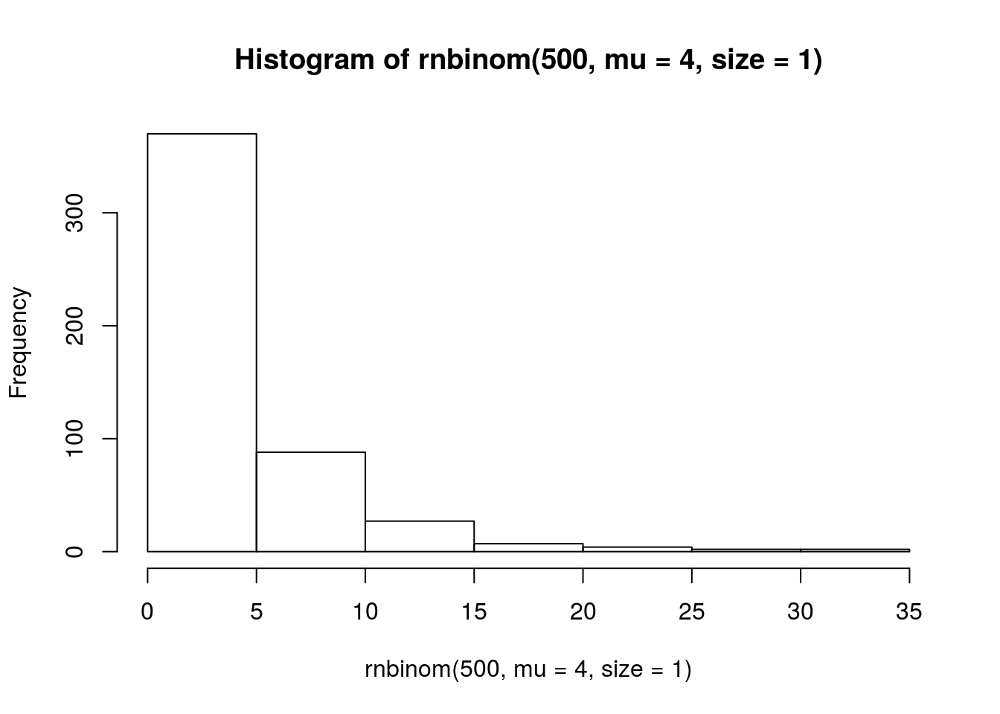

As the dataset itself contains some highly skewed variables and also missing data, I will try several types of models to find one that fits the data best.
Session information:
sessionInfo()## R version 3.3.2 (2016-10-31)
## Platform: x86_64-pc-linux-gnu (64-bit)
## Running under: Ubuntu 14.04.4 LTS
##
## locale:
## [1] LC_CTYPE=en_US.UTF-8 LC_NUMERIC=C
## [3] LC_TIME=en_US.UTF-8 LC_COLLATE=en_US.UTF-8
## [5] LC_MONETARY=de_DE.UTF-8 LC_MESSAGES=en_US.UTF-8
## [7] LC_PAPER=de_DE.UTF-8 LC_NAME=C
## [9] LC_ADDRESS=C LC_TELEPHONE=C
## [11] LC_MEASUREMENT=de_DE.UTF-8 LC_IDENTIFICATION=C
##
## attached base packages:
## [1] grid stats graphics grDevices utils datasets methods
## [8] base
##
## other attached packages:
## [1] gsubfn_0.6-6 proto_0.3-10 scales_0.4.0 gridExtra_2.2.1
## [5] readxl_0.1.1 ggplot2_2.1.0
##
## loaded via a namespace (and not attached):
## [1] Rcpp_0.12.5 knitr_1.14 magrittr_1.5 mnormt_1.5-4
## [5] munsell_0.4.3 colorspace_1.2-6 stringr_1.0.0 plyr_1.8.3
## [9] tcltk_3.3.2 tools_3.3.2 parallel_3.3.2 gtable_0.2.0
## [13] psych_1.6.6 htmltools_0.3.5 yaml_2.1.13 assertthat_0.1
## [17] digest_0.6.9 tibble_1.2 formatR_1.4 evaluate_0.9
## [21] rmarkdown_1.1 stringi_1.0-1hist(rnbinom(500, mu = 4, size = 1))
Copyright © 2016 Melanie Tietje. All rights reserved.